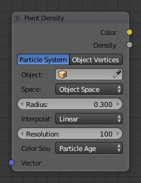

Вузол «Щільність Точок» -- Point Density Node¶

Вузол «Щільність Точок» -- Point Density Node.
Вузол Point Density використовується для додання точок об'єму для кожної частинки чи вершини іншого об'єкта.
Уводи -- Inputs¶
- Вектор -- Vector
- Текстурна координата для відбору текстури; стандартно використовується глобальна позиція (вивід Position вузла Geometry), якщо цей роз'єм залишено ні з чим не з'єднаний.
Властивості -- Properties¶
- Дані Точок -- Point Data
Де беруться точки.
- Система Частинок -- Particle System
- Використовує позицію кожної частинки з вказаної системи частинок.
- Вершини Об'єкта -- Object Vertices
- Використовує позицію кожної вершини з вказаного об'єкта.
- Об'єкт -- Object
- Об'єкт або система частинок, з якого чи якої використовуються вершини або частинки.
- Система Частинок -- Particle System
- Позиції частинок будуть використовуватися з такої системи.
- Простір -- Space
Система координат для розкладання точок.
- Простір Світу -- World Space
- Розкладає кожну точку точно там, де знаходиться частинка/вершина джерела.
- Простір Об'єкта -- Object Space
- Вписує точки з частинок/вершин джерела всередину габаритної коробки об'єкта за допомогою цієї текстури Point Density.
- Радіус -- Radius
- Size of the points.
- Інтерполяція -- Interpolation
Тип фільтрування текселя.
- Найближче -- Closest
- Без інтерполяції, використовує найближчий тексель. Продукує блочні на вигляд точки.
- Лінеарно -- Linear
- Інтерполює лінеарно між текселями, продукує м'які, округлі точки.
- Кубічно -- Cubic
- Використовує кубічний спад, продукуючи дуже м'які точки. Корисно, коли точки є дуже щільно упаковані.
- Роздільність -- Resolution
- Розміри текстури, що містить дані точок.
- Джерело Кольору -- Color Source
Який атрибут системи частинок або сіті використовується для виводу кольору.
- Джерела Кольору Частинок -- Particle Color Sources
- Вік Частинок -- Particle Age
- Час життя, розкладений як інтенсивність 0.0 - 1.0.
- Швидкість Частинок -- Particle Speed
- Швидкість частинок (абсолютна величина скорості), розкладена як інтенсивність 0.0 - 1.0.
- Скорість Частинок -- Particle Velocity
- Скорість XYZ, розкладена на кольори RGB.
- Джерела Кольору Вершин -- Vertex Color Sources
- Колір Вершин -- Vertex Color
Використовує шар кольору вершин для забарвлення текстури Point Density.
Ghi chú
Кольори вершин визначаються по кутках граней. Одинична вершина може мати стільки різних кольорів, скільки є граней, частиною яких вона є, Фактичний колір текстури Щільність Точок усереднюється з усіх вершинних кутків.
- Вагомість Вершини -- Vertex Weight
- Використовує вагомості з групи вершин як значення інтенсивності.
- Нормалі Вершин -- Vertex Normals
- Використовує нормалі вершин з об'єктного простору як значення RGB.
Виводи -- Outputs¶
- Колір -- Color
- Вивід кольорів текстури.
- Щільність -- Density
- Щільність об'єму.
Приклади¶

Об'єкт домену з текстурою Point Density, що використовує вершини з м'яча як точки.